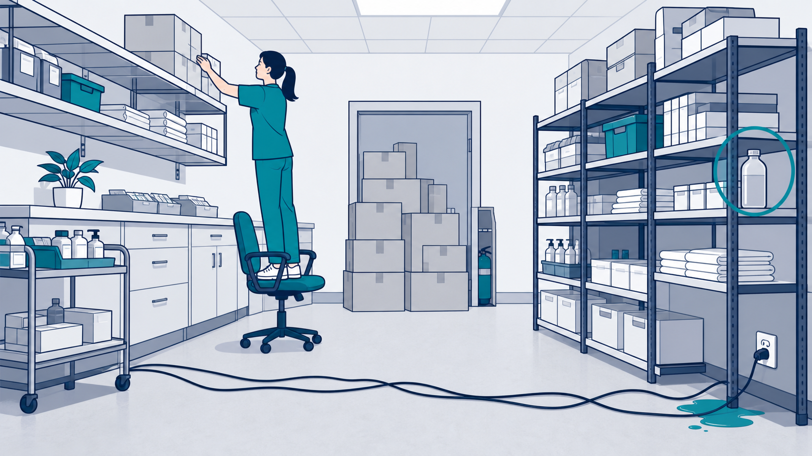
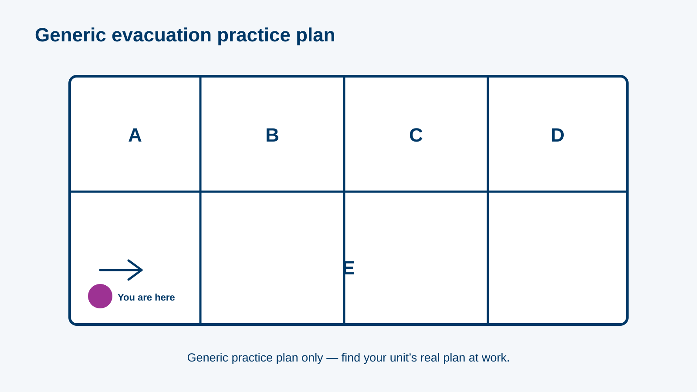
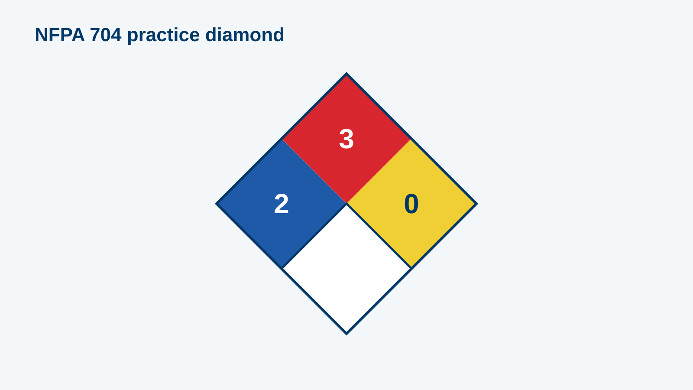

MODULE 02
Safety in Practice: Hazard, Fire & Chemical Lab
~33 minutes
✦hs2-000 · L1 Title · title visual · supplied client logo and background onlySafety in Practice: Hazard, Fire & Chemical Lab · official client logo and palette applied to every reference screen.
storyboard.md; screenshots, policy values and hotspot coordinates remain subject to the module’s source lock.MODULE 02
~33 minutes
✦hs2-000 · L1 Title · title visual · supplied client logo and background onlyL3 Content · Part A — Welcome & risk
"Safety = measures that protect life, health and environment." · "Today you practise, not read."
hs2-001 · content_slide · screen visual reference only · inspect final responsive build before approvalL3 Content · Part A — Welcome & risk
Problem: wet floor at the clinic entrance during rain. Steps: (1) name the hazard; (2) likelihood 4 (busy entrance) ; (3) impact 3 (fall injury); (4) risk = …
hs2-010 · worked_example · screen visual reference only · inspect final responsive build before approvalL3 Content · Part A — Welcome & risk
New illustration of a store room/office (based on p.4 idea). Answer key (6 regions): trailing cables across the walkway · boxes stacked above shoulder height · blocked fire …

hs2-011 · hotspot · visual asset: hs2-img-storeroom · screen visual reference only · inspect final responsive build before approvalL4 Question · Part A — Welcome & risk
"Which hazard in the room do you report and fix first?" → blocked fire exit (high impact for everyone)
hs2-012 · mcq · screen visual reference only · inspect final responsive build before approvalL4 Question · Part A — Welcome & risk
"Likelihood 2, impact 5. Risk score = ___" → accepted: 10
hs2-013 · fill_blank · screen visual reference only · inspect final responsive build before approvalL3 Content · Part B — Codes & the Code Red drill
10 colour codes + 2 announcements; front EN + AR name and colour chip, back meaning + extension (D2). Code Blue 2222
hs2-020 · flashcards · screen visual reference only · inspect final responsive build before approvalhs2-img-codes12 cards, EN + AR text in HTML, colour chip SVG only
Draft alt: decorative chip
PENDING relevant Phase 0 and SME visual approval; provenance recorded before production.L5 Scenario · Part B — Codes & the Code Red drill
Setting: afternoon clinic, smoke from a consultation room. Nodes: (1) Rescue — patient in the room vs. phone first; (2) Alarm — shout "Code Red", pull the call …
hs2-030 · game · screen visual reference only · inspect final responsive build before approvalhs2-img-drill-1Smoke in a consultation room with an unnamed patient.
Draft alt: Consultation room with smoke and an unnamed patient; no real person or identifier.
PENDING D1/D2 and 02 B2/B8 as applicable; Safety Manager signs all six nodes/scenes, code wording and assembly-point treatment.hs2-img-drill-2Call point and phone; call-script wording is editable HTML after approval.
Draft alt: Fire alarm call point beside a telephone; labels and call script are separate editable text.
PENDING D1/D2 and 02 B2/B8 as applicable; Safety Manager signs all six nodes/scenes, code wording and assembly-point treatment.hs2-img-drill-3Oxygen cylinder and alcohol rub; containment cues follow the signed node list.
Draft alt: Consultation-room scene with an oxygen cylinder, alcohol rub and a door.
PENDING D1/D2 and 02 B2/B8 as applicable; Safety Manager signs all six nodes/scenes, code wording and assembly-point treatment.hs2-img-drill-4Small bin fire versus spreading fire; depict both states in separate editable layers.
Draft alt: Bin-fire scene with a separate spreading-fire state for the authored decision.
PENDING D1/D2 and 02 B2/B8 as applicable; Safety Manager signs all six nodes/scenes, code wording and assembly-point treatment.hs2-img-drill-5Stairwell with evacuation chair and an unnamed wheelchair user; no real floor plan.
Draft alt: Generic stairwell with an evacuation chair and an unnamed wheelchair user.
PENDING D1/D2 and 02 B2/B8 as applicable; Safety Manager signs all six nodes/scenes, code wording and assembly-point treatment.hs2-img-drill-6Generic assembly point; local names and all-clear wording remain editable.
Draft alt: Generic outdoor assembly point with unnamed colleagues waiting.
PENDING D1/D2 and 02 B2/B8 as applicable; Safety Manager signs all six nodes/scenes, code wording and assembly-point treatment.L4 Question · Part C — Evacuation
Items: "Bedbound adult on the 2nd floor", "Adult who can't walk, stairs needed", "Newborn in the nursery", "Infant carried by staff" → targets: Evacuation mattress · Evacuation chair …
hs2-031 · drag_drop · screen visual reference only · inspect final responsive build before approvalL4 Question · Part C — Evacuation
Generic own floor plan (Zones A–E). Place 6 labels: call point · extinguisher · fire hose reel · fire blanket · evacuation route · assembly point ("you are …

hs2-032 · labeled_diagram · visual asset: hs2-img-floorplan · screen visual reference only · inspect final responsive build before approvalL3 Content · Part C — Evacuation
Inside assembly point · Outside assembly point · "Find your unit's plan on the wall today." Horizontal → vertical → full (recap from 01)
hs2-033 · content_slide · screen visual reference only · inspect final responsive build before approvalL3 Content · Part D — Extinguishers
Own photo of a My Clinic dry-powder extinguisher. Regions: safety pin · pressure gauge (needle in green) · class / agent label · instructions panel (PASS) · last …
hs2-040 · hotspot · screen visual reference only · inspect final responsive build before approvalhs2-img-extinguisherMy Clinic dry-powder extinguisher, label legible, 3:4 crop
Draft alt: "Dry-powder fire extinguisher with its label."
PENDING client photo permission and EHS/Safety equipment review; kit procedure also awaits 02 B4.L4 Question · Part D — Extinguishers
Scenes: "Sparking computer", "Pan of oil in the staff kitchen", "Burning cardboard", "Spilled solvent on fire" → CO₂ · Wet chemical · Water / ABC powder · Foam
hs2-041 · drag_drop · screen visual reference only · inspect final responsive build before approvalL3 Content · Part E — Spills
Definition (p.21) · Code Orange = chemical or biological release · Rule from D1
hs2-050 · content_slide · screen visual reference only · inspect final responsive build before approvalL3 Content · Part E — Spills
Before = Chemical spill kit (red case) · After = Biological spill kit (yellow, biohazard) · caption: contents of each
hs2-051 · image_compare · screen visual reference only · inspect final responsive build before approvalhs2-img-kit-chemReal My Clinic kits, same angle and size
Draft alt: Chemical spill kit supplied by My Clinic; equipment and colour await EHS review.
PENDING client photo permission and EHS/Safety equipment review; kit procedure also awaits 02 B4.hs2-img-kit-bioReal My Clinic kits, same angle and size
Draft alt: Biological spill kit supplied by My Clinic; equipment and colour await EHS review.
PENDING client photo permission and EHS/Safety equipment review; kit procedure also awaits 02 B4.L5 Scenario · Part E — Spills
3 nodes: (1) urine sample dropped in the lab corridor → biological kit, no Code Orange; (2) large spill of surface disinfectant above the threshold → Code Orange …
hs2-052 · decision_scenario · screen visual reference only · inspect final responsive build before approvalL4 Question · Part E — Spills
7 steps (B4): PPE per SDS → isolate & warn → contain the edges → absorb / neutralise → bag, seal, label → clean & report → restock …
hs2-053 · sorting · screen visual reference only · inspect final responsive build before approvalL3 Content · Part F — Labels & the chemical register
Anonymised register table (5 rows, from B5): name · hazard class · purpose · quantity · SDS ✓ · NFPA H/F/R/S. Callouts on the SDS and NFPA columns
hs2-060 · content_slide · screen visual reference only · inspect final responsive build before approvalhs2-img-registerRebuilt from the anonymised register (B5); real text, not a screenshot
Draft alt: n/a (HTML)
PENDING relevant Phase 0 and SME visual approval; provenance recorded before production.L4 Question · Part F — Labels & the chemical register
9 pairs: pictogram ↔ example hazard text from p.23 (e.g. Flame over circle ↔ "oxidiser — can intensify fire")
hs2-061 · matching · screen visual reference only · inspect final responsive build before approvalhs2-img-ghs-1Reuse module 01 assets hs1-img-ghs-
Draft alt: names
PENDING relevant Phase 0 and SME visual approval; provenance recorded before production.hs2-img-ghs-2Reuse module 01 assets hs1-img-ghs-
Draft alt: names
PENDING relevant Phase 0 and SME visual approval; provenance recorded before production.hs2-img-ghs-3Reuse module 01 assets hs1-img-ghs-
Draft alt: names
PENDING relevant Phase 0 and SME visual approval; provenance recorded before production.hs2-img-ghs-4Reuse module 01 assets hs1-img-ghs-
Draft alt: names
PENDING relevant Phase 0 and SME visual approval; provenance recorded before production.hs2-img-ghs-5Reuse module 01 assets hs1-img-ghs-
Draft alt: names
PENDING relevant Phase 0 and SME visual approval; provenance recorded before production.hs2-img-ghs-6Reuse module 01 assets hs1-img-ghs-
Draft alt: names
PENDING relevant Phase 0 and SME visual approval; provenance recorded before production.hs2-img-ghs-7Reuse module 01 assets hs1-img-ghs-
Draft alt: names
PENDING relevant Phase 0 and SME visual approval; provenance recorded before production.hs2-img-ghs-8Reuse module 01 assets hs1-img-ghs-
Draft alt: names
PENDING relevant Phase 0 and SME visual approval; provenance recorded before production.hs2-img-ghs-9Reuse module 01 assets hs1-img-ghs-
Draft alt: names
PENDING relevant Phase 0 and SME visual approval; provenance recorded before production.L4 Question · Part F — Labels & the chemical register
Row: "Surface disinfectant X — SDS ✘". "You need it for a cleaning task now. What do you do?" → don't use; report the missing SDS to your …
hs2-062 · mcq · screen visual reference only · inspect final responsive build before approvalhs2-img-registerRebuilt from the anonymised register (B5); real text, not a screenshot
Draft alt: n/a (HTML)
PENDING relevant Phase 0 and SME visual approval; provenance recorded before production.L4 Question · Part F — Labels & the chemical register
Row shows NFPA 2-3-0. "Where must it be stored?" → approved flammable cabinet, away from heat

hs2-063 · mcq · visual asset: hs2-img-nfpa-230 · screen visual reference only · inspect final responsive build before approvalhs2-img-registerRebuilt from the anonymised register (B5); real text, not a screenshot
Draft alt: n/a (HTML)
PENDING relevant Phase 0 and SME visual approval; provenance recorded before production.L4 Question · Part F — Labels & the chemical register
Intro: the store door is locked; four checks unlock it. Puzzles: (1) "Health rating of the solvent on the diamond?" → 2; (2) "Which register row is missing …
hs2-064 · escape_room · screen visual reference only · inspect final responsive build before approvalhs2-img-registerRebuilt from the anonymised register (B5); real text, not a screenshot
Draft alt: n/a (HTML)
PENDING relevant Phase 0 and SME visual approval; provenance recorded before production.hs2-img-spill-photoSpill with a measuring cue (e.g. a 1 L bottle on its side, more than half gone)
Draft alt: "Large disinfectant spill from a one-litre bottle."
PENDING D1 / 02 B1 threshold; EHS signs volume cue and puzzle context before illustration.L4 Question · Part G — Regulations & close
Items: scented candle · personal fan heater · extension cord from home · e-cigarette · Facilities-approved power strip · BME-tagged suction unit · reheating lunch for 10 minutes …
hs2-070 · drag_drop · screen visual reference only · inspect final responsive build before approvalL6 Results / close · Part G — Regulations & close
hs2-o1…o7, weak below 70%
hs2-080 · results_breakdown · screen visual reference only · inspect final responsive build before approvalL4 Question · Part G — Regulations & close
"Name one hazard you'll check in your own area this week."
hs2-081 · poll · screen visual reference only · inspect final responsive build before approvalL6 Results / close · Part G — Regulations & close
What you practised · Contact: Safety & Security (extension B9) · Next: module 04 / your unit's drill schedule
hs2-090 · summary · screen visual reference only · inspect final responsive build before approval